PORTFOLIO > STAJ ÇALIŞMALARI
Staj Süreci ve Veri Analizi Çalışmaları
Staj sürecinde OEE (Overall Equipment Effectiveness) ve Predictive Maintenance veri analizi çalışmaları yapılmış; aşağıda süreç, yöntemler ve elde edilen görseller paylaşılmaktadır.
STAJ SÜRECİ
Endüstriyel veri analizinden makine öğrenmesi modelleme aşamasına adımlar
terminal Kullanılan Yöntemler
Veri Analizi & Görselleştirme:
İstatistiksel Yöntemler:
Makine Öğrenmesi:
info Staj Özeti
Staj süresince iki ana veri analizi çalışması yürütüldü. İlk çalışmada bir üretim tesisinin OEE (Overall Equipment Effectiveness) ve duruş verileri analiz edilerek ekipman verimliliğindeki kayıplar tespit edildi; Availability, Performance ve Quality bileşenleri ayrı ayrı değerlendirilerek plansız duruşların kaynaklarına göre Pareto analizi yapıldı.
İkinci çalışmada AI4I 2020 Predictive Maintenance veri setiyle makine arıza tahmini üzerine sınıflandırma modelleri kuruldu; Logistic Regression, Decision Tree ve Random Forest algoritmaları farklı doğrulama stratejileriyle karşılaştırılarak arıza tipleri (HDF, OSF, PWF, TWF, RNF) üzerindeki tahmin başarısı ölçüldü.
Elde edilen bulgular ışığında, bu analizlerin web üzerinden kullanılabilir hale getirilmesi için trex DataLab dashboard uygulaması geliştirildi. Uygulama ile veri kalitesi skorlama, ön işleme adımları, görselleştirme ve PDF raporlama işlemleri tek bir arayüzde sunulmakta; kullanıcıların analiz akışını kod yazmadan yönetmesi hedeflenmektedir.
table_chart Model Sonuçları (AI4I 2020)
Sınıflandırma algoritmalarının arıza tahmin başarı metrikleri
| Model | Precision | Recall | F1-Score | PR-AUC |
|---|---|---|---|---|
| Logistic Regression | 0.78 | 0.82 | 0.80 | 0.75 |
| Decision Tree | 0.84 | 0.79 | 0.81 | 0.83 |
| Random Forest star | 0.92 | 0.89 | 0.90 | 0.94 |
bar_chart Model Karşılaştırma — F1-Score
En Yüksek: Random Forest (0.90)tune Özellik Önemi (Random Forest)
Random Forest modelinde arıza tahminini en güçlü etkileyen sensörler; Torque ve Tool Wear öne çıkar.
summarize Staj İstatistik Özeti
OEE ve duruş analiziyle ekipman kayıpları haritalandı; AI4I ile makine arızaları sınıflandırıldı.
gallery_thumbnail Grafik Galerisi
OEE duruş analizi ve AI4I kestirimci bakım veri seti görselleştirmeleri
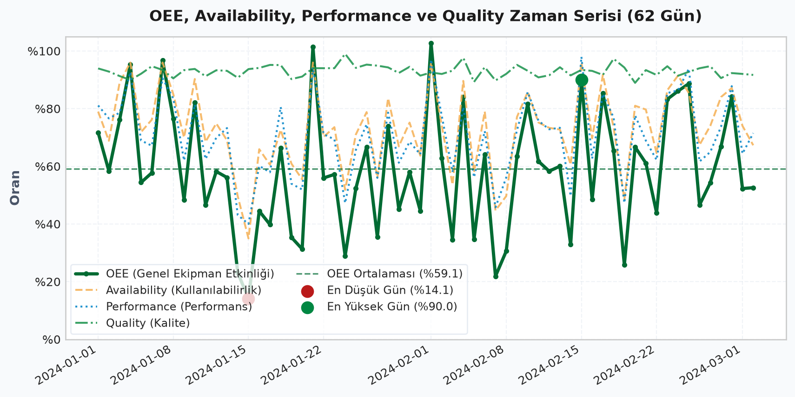
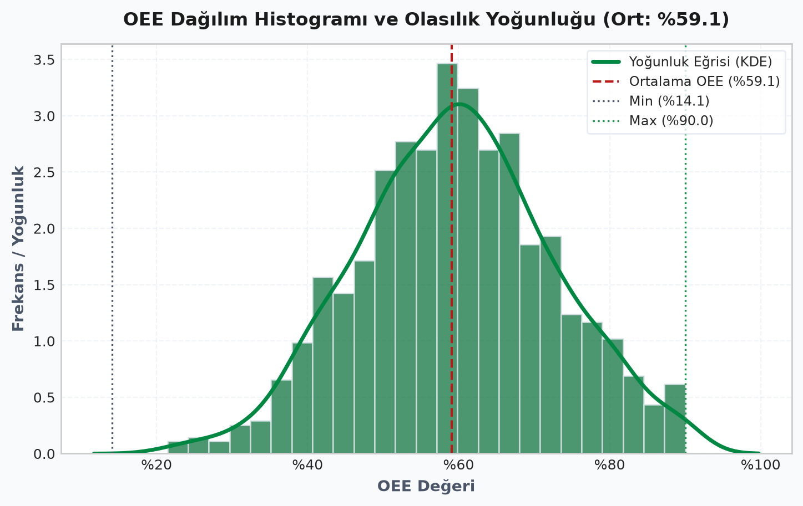
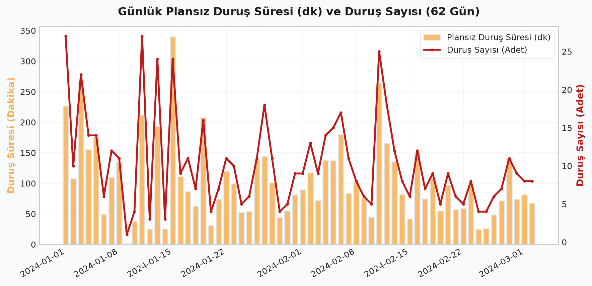
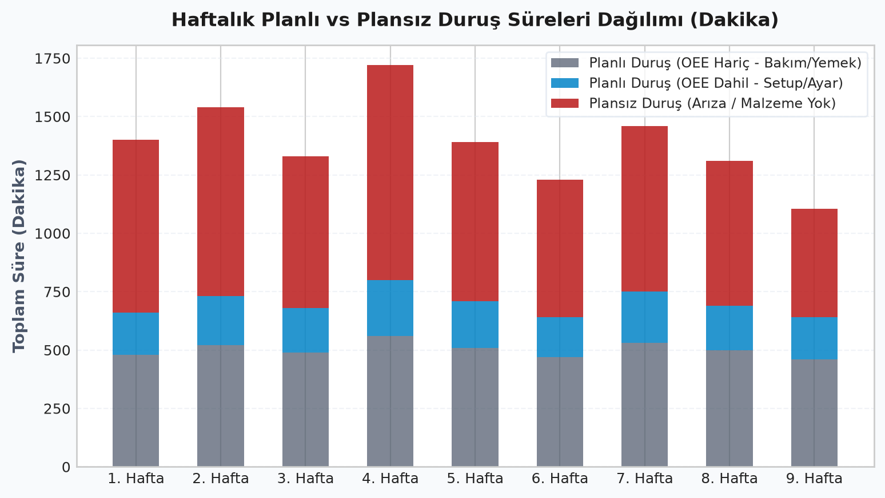
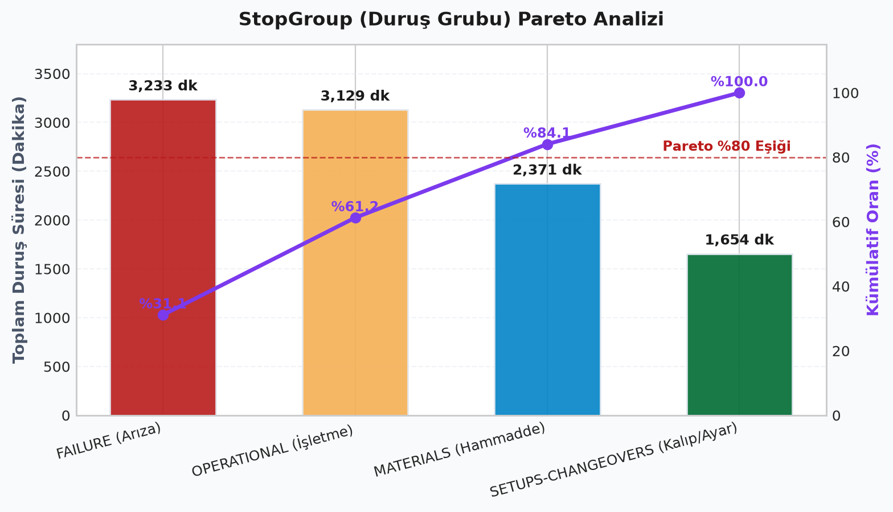
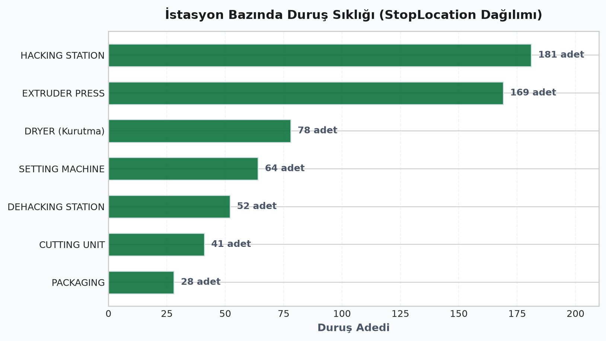
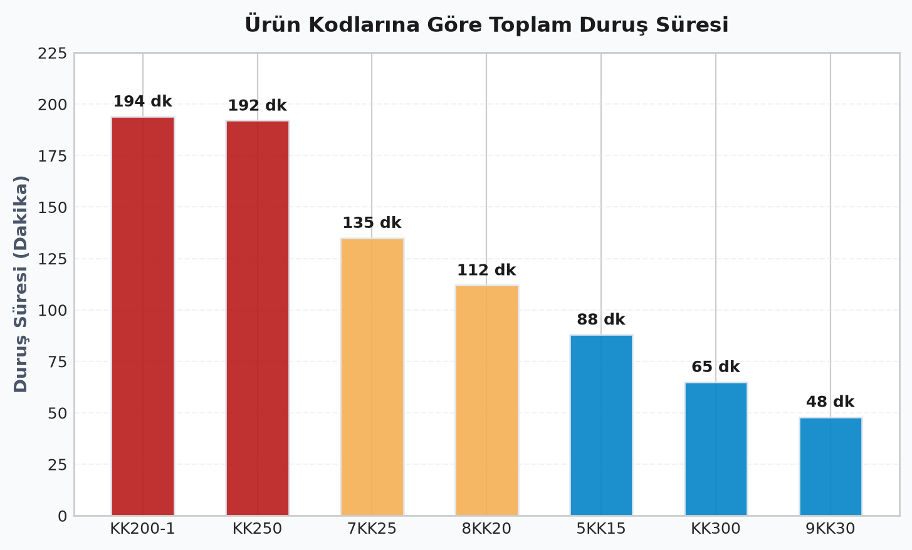
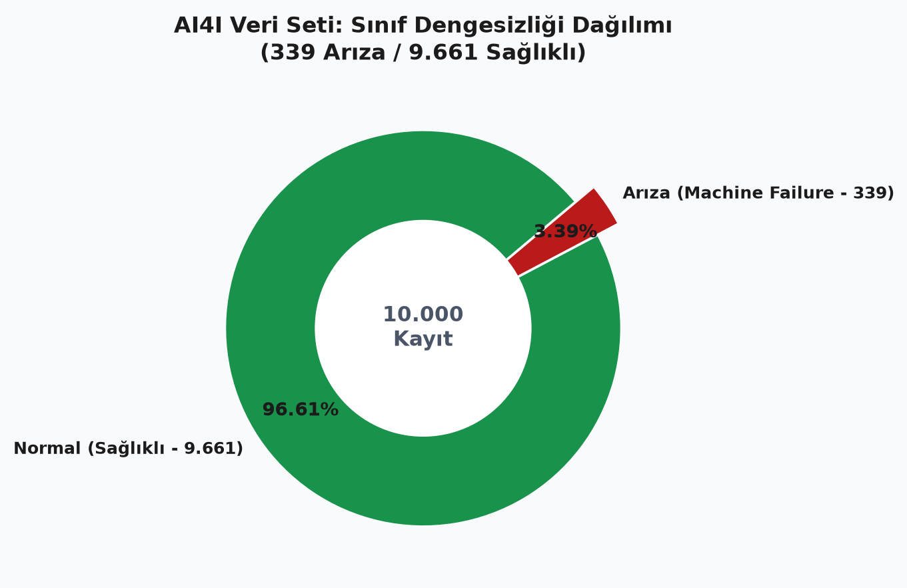
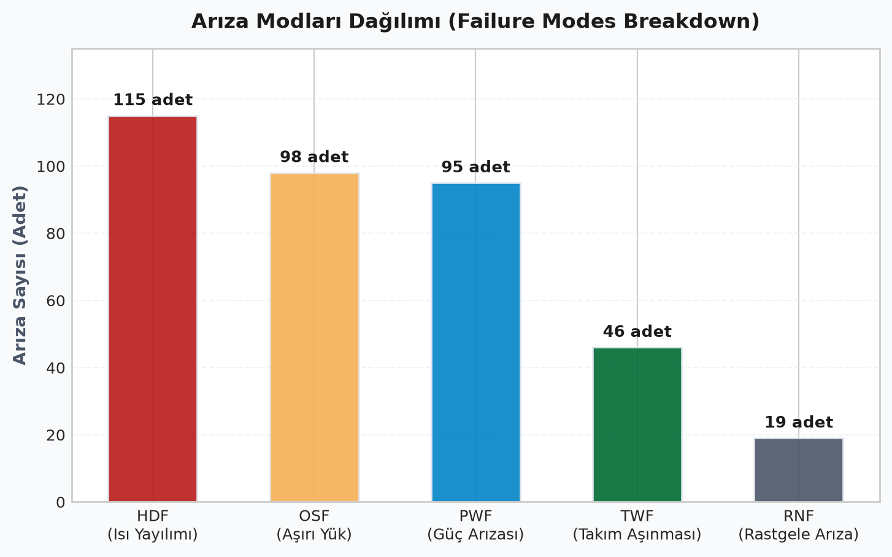
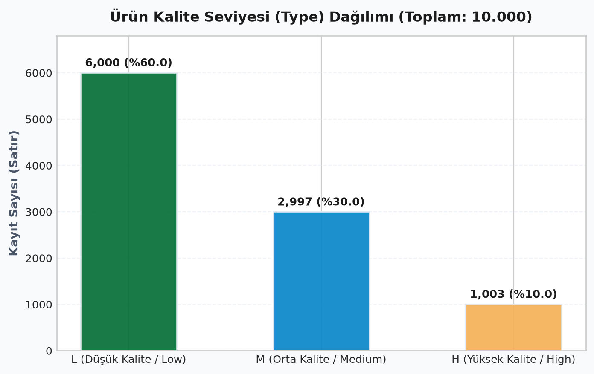
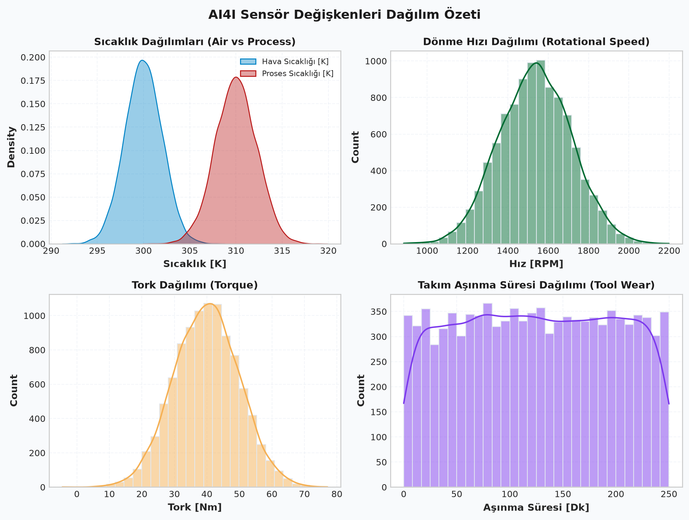
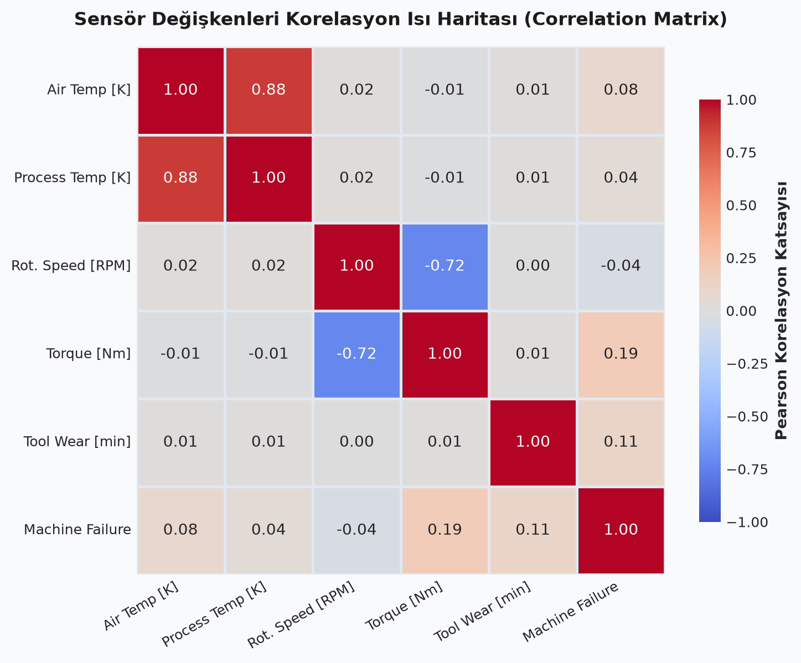